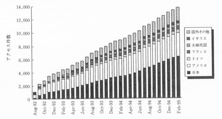

の公表の一環として国際シンポジウムを開催し た（前述）。また、各種のワークショップ等を 開催して本研究に関する意見交換を行った（注 21）。さらに、(財)新世代コンピュータ技術開 発機構で刊行された ＴＲ、ＴＭ 及び 『ICOT ジャーナル』（注22）という定期刊行物等のほ とんどを日本語版、英語版の両方で作成・配布 し、海外へも研究成果の普及に努めた。米国国 立科学財団部長の Y.T. チェン氏は「テクニカ ルレポートや 定期刊行物など ほとんどのペー パーについて英語版を用意しており、国際的に 研究成果に関する情報を 提供するように 努め た。日本のプロジェクトではかなり珍しいので はないか」と評価している（『日経産業新聞』 1992年６月10日付け）。 d) 海外の研究機関との研究交流 第五世代コンピュータ・プロジェクトは海外 の機関とすべて共同で研究するという方式は取 らず、いわゆる「両岸方式」でプロジェクトを 実施した。 すなわち、 日本でも第五世代コン ピュータの研究をするし、同時に諸外国も同様 のプロジェクトを進める。その成果を包み隠さ ず公開し、意見交換して更に研究を進めていく |
という方式である。このような方針でプロジェ クトを実施すると、国際共同研究のように他国 の内政的要因によって、プロジェクト自体が崩 壊することがない というメリットがある （注 23）。もちろん、一部の研究課題については、 共同でも研究を行った。例えばスウェーデンコ ンピュータ科学研究所（SICS） とは、 並列論 理型言語システム、CAD システム 及び 制約論 理プログラミングの共同研究を行った。それ以 外では、 米国アルゴンヌ国立共同研究所（ AN L）、米国国立衛生研究所（NIH）、米国ローレ ンス・バークレイ 研究所（LBL） とも 第五世 代コンピュータ・プロジェクトの一つの研究項 目について共同研究を行った。 また第五世代コンピュータ・プロジェクトに 触発されて、海外でも次々と同様のプロジェク トが 開始 された。 米国では SCSP 計画 （Strategic Computing and Survivability Program ） （注24）、 MCC プロジェクト （Microelectronics and Computer Tech- nology Corporation）（注25）、ECでは ESP RIT 計画 （ European Strategic Program for Research and Development in Infor- |
- 126 -